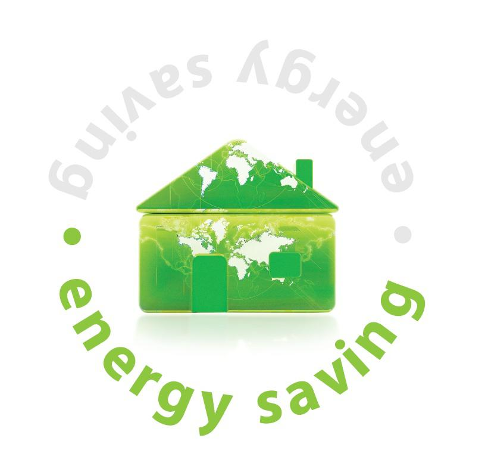
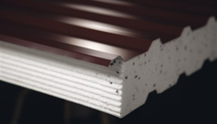

Jesteśmy producentem kontenerów socjalnych w różnych,
wybranych przez Inwestora wersjach. Kontenery są wykonane pod specjalne zamówienie i
konfiguracji wybranej przez Klienta. Występują w wersji jednomodułowej oraz wielomodułowej,
z instalacją wodno-kanalizacyjną oraz grzewczą. Doskonale sprawują się jako zaplecze budów
, stróżówki czy pomieszczenia socjalne/szatnie.
Z czego wykonujemy kontenery:
Nasze kontenery wykonane są z płyt warstwowych BALEXTHERM.
Dla nas liczy się przede wszystkim jakość, ekonomika i estetyka. Mając to na względzie
korzystamy jedynie z najlepszych produktów. Płyty warstwowe w okładzinach metalowych z rdzeniem styropianowym
BALEXTHERM zostały docenione przez ekspertów wieloma nagrodami i każdego dnia wybierane są przez profesjonalistów.
Kilka cech płyt BALEXTHERM:
wysokogatunkowa stal: S250GD – S280GD+; Nierdzewna (1.4301)
rdzeń: ze sztywnej pianki poliuretanowej - gęstość 40 (+/-3) kg/m³, twardej wełny mineralnej - gęstość nominalna 110 kg/m³ lub styropianu samo gasnącego o podwyższonych właściwościach wytrzymałościowych – gęstość 16,2 kg/m³
FIRESTOP - najlepszy na rynku parametr odporności ogniowej; klasyfikacja jako produkt NRO – nierozprzestrzeniający ognia
blacha ocynkowana oraz dodatkowe powłoki organiczne stanowią solidne zabezpieczenie antykorozyjne – dla wyjątkowej powłoki CESAR PUR55 nawet klasyC5
Ekologiczny proces wytwarzania
produkty posiadają odpowiednie aprobaty oraz atesty
znakomite właściwości izolacyjne – termiczne i akustyczne – pozwalają na zastosowanie tylko jednej warstwy ściennej i dachowej, oferując jednocześnie utrzymanie niskich kosztów eksploatacji
zastosowane powłoki chronią płyty przed mchami, porostami i innymi zabrudzeniami ścian i dachów, a także ułatwiają czyszczenie

